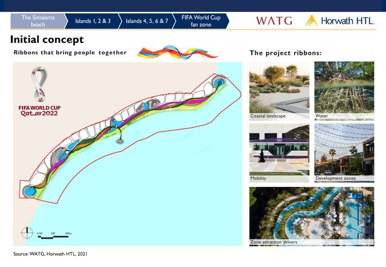

Sustainable tourism planning and destination design
Destinations that keep what visitors come for. We plan coasts, resorts and heritage sites that earn all year and protect their landscape and identity.
Tourism runs through PUD's history. Prof. Dr. Abdallah Attia planned Egypt's North West Coast and Marina El Alamein, and designed Tut Amun on Lake Nasser and Hilton Dahab in Sinai. His son, Prof. Dr. Amr Attia, studied tourism policy on that same coast for his PhD at University College London.
Today the practice advises on destinations in Egypt and Saudi Arabia, from the Red Sea coast and the Pyramids Plateau to AlUla, Khaybar and the holy sites of Makkah. The aim is destinations rooted in local identity, open year round and resilient in the long term.
What this covers
- Coastal and resort master planning
- Destination and tourism design
- Heritage tourism and visitor experience
- Green Star and sustainable hotel programmes
- Tourism strategy and policy
- Visitor management and capacity
Selected projects
 Pyramids Plateau Destination Master PlanGiza · 2024-2025
Pyramids Plateau Destination Master PlanGiza · 2024-2025 Hilton Dahab Village HotelDahab, Sinai · 1991
Hilton Dahab Village HotelDahab, Sinai · 1991 Marina El AlameinNorth Coast · 1985-1997
Marina El AlameinNorth Coast · 1985-1997 Tut Amun Village Hotel and ResortAswan · 19812011Regional Vision for the North Coast and Tourism Development Master Plan for Fuka-MatrouhFuka-Matrouh sub-region, North Coast · 20111994Marina Matrouh Tourist CentreMarsa Matrouh, North Coast · 1994-2004
Tut Amun Village Hotel and ResortAswan · 19812011Regional Vision for the North Coast and Tourism Development Master Plan for Fuka-MatrouhFuka-Matrouh sub-region, North Coast · 20111994Marina Matrouh Tourist CentreMarsa Matrouh, North Coast · 1994-2004 Cairo Media CityGiza · 2026
Cairo Media CityGiza · 2026 Ramla Concept Master PlanNorth Coast · 2023
Ramla Concept Master PlanNorth Coast · 2023 Al Alamein Riviera Vision Master PlanNorth Coast (New Alamein) · 2022
Al Alamein Riviera Vision Master PlanNorth Coast (New Alamein) · 2022 Madaar Ras El Hekma (Azha Ras Al Hekma)Ras El Hekma, North Coast · 2022
Madaar Ras El Hekma (Azha Ras Al Hekma)Ras El Hekma, North Coast · 2022
Simaisma Beach and Lusail IslandsLusail · 2021 Al Soudah Master Plan CompetitionAseer Region · 2020
Al Soudah Master Plan CompetitionAseer Region · 202054 projects. Where we apply it:
Questions people ask
What is sustainable tourism planning?
Sustainable tourism planning shapes destinations so that the economic, social and environmental effects of visitors are managed over the long term. It looks at land use, infrastructure, local communities, heritage and ecology together.
Where has PUD planned tourism destinations?
Along Egypt's North Coast (Marina El Alamein, Marina Matrouh, Fanarah, Alamein Riviera), Ain El Sokhna, Hurghada, Dahab, Port Ghalib and Ras El Hekma, and in Saudi Arabia at AlUla, Khaybar, Makkah and on the Red Sea coast.